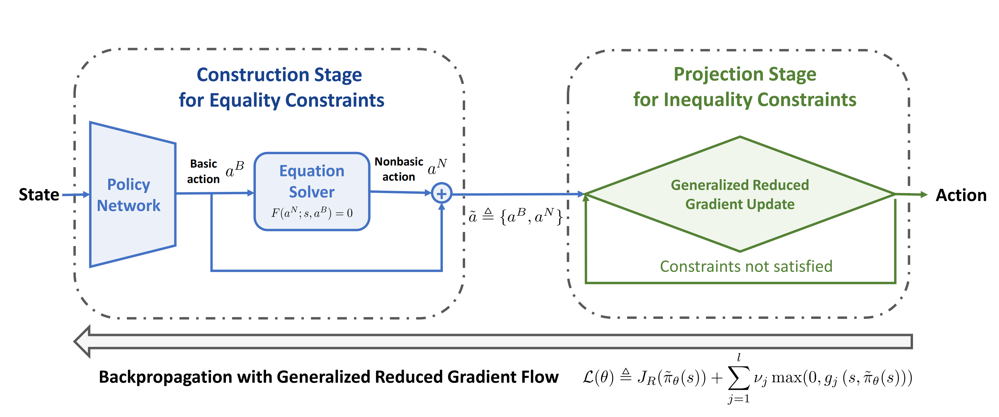

Recent advances in constrained reinforcement learning (RL) have endowed reinforcement learning with certain safety guarantees. However, deploying existing constrained RL algorithms in continuous control tasks with general hard constraints remains challenging, particularly in those situations with non-convex hard constraints. Inspired by the generalized reduced gradient (GRG) algorithm, a classical constrained optimization technique, we propose a reduced policy optimization (RPO) algorithm that combines RL with GRG to address general hard constraints. RPO partitions actions into basic actions and nonbasic actions following the GRG method and outputs the basic actions via a policy network. Subsequently, RPO calculates the nonbasic actions by solving equations based on equality constraints using the obtained basic actions. The policy network is then updated by implicitly differentiating nonbasic actions with respect to basic actions. Additionally, we introduce an action projection procedure based on the reduced gradient and apply a modified Lagrangian relaxation technique to ensure inequality constraints are satisfied. To the best of our knowledge, RPO is the first attempt that introduces GRG to RL as a way of efficiently handling both equality and inequality hard constraints. It is worth noting that there is currently a lack of RL environments with complex hard constraints, which motivates us to develop three new benchmarks: two robotics manipulation tasks and a smart grid operation control task. With these benchmarks, RPO achieves better performance than previous constrained RL algorithms in terms of both cumulative reward and constraint violation. We believe RPO, along with the new benchmarks, will open up new opportunities for applying RL to real-world problems with complex constraints.

Cite our work
If you find this work useful in your research, please consider citing:
@inproceedings{
ding2023reduced,
title={Reduced Policy Optimization for Continuous Control with Hard Constraints},
author={Shutong Ding and Jingya Wang and Yali Du and Ye Shi},
booktitle={Thirty-seventh Conference on Neural Information Processing Systems},
year={2023},
url={https://openreview.net/forum?id=fKVEMNmWqU}
}